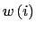
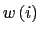
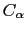

When one has two similar structures, one often wants to compare them. What's the difference between two X-ray structures? How much did the structure change during a simulation? To answer these questions, you must first figure out how to compare two structures, which usually means that you must find the root mean square deviation (RMSD).
Formally, given  atom positions from structure
atom positions from structure  and the
corresponding
and the
corresponding  atoms from structure
atoms from structure  with a weighting factor

,
the RMSD is defined as:
with a weighting factor

,
the RMSD is defined as:
Using this equation by itself probably won't give you the answer you are looking for. Imagine two identical structures offset by some distance. The RMSD should be 0, but the offset prevents that from happening. What you really want is the minimum RMSD between two given structures; the best fit. There are many ways to do this, but for VMD we have implemented the method of Kabsch (Acta Cryst. (1978) A34, 827-828 or see file Measure.C in the VMD source code). This algorithm computes the transformation, needed to move one structure onto another in order to minimize the RMSD.
With the mathematical prerequisites behind us, we still need to be
able to specify how to choose the atoms to compare. If you want to
compare all the atoms in both structures, and they both have the same
number of atoms, then the problem is easy -  is everything. This
occurs most often in MD simulations when the only thing different
between two structures are the coordinates.
is everything. This
occurs most often in MD simulations when the only thing different
between two structures are the coordinates.
But what about homologous sequences? In this case, the number of atoms differ because while the number of residues is the same, the sidechains have different numbers of atoms. The usual solution is to determine the RMSD based solely on the backbone atoms or, in some X-ray structures where only the  atoms have been determined, based on the atoms. VMD allows you to fit and align based on any valid atom selection, as long as the atom selection specifies the same number of atoms in each molecule being compared.